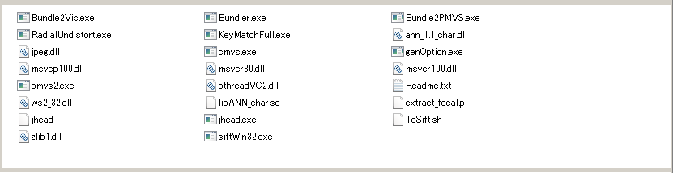

Visual studio メモ 4 --BundlerをVisual Studio 2010でコンパイルしてつかう--
BundlerをVisual Studioでコンパイル(バイナリが公開されてるので自分でコンパイルする必要はないが)
参考にしたページ
コンパイル手順
- (i) [1]からbundler-v0.4-source.zipをダウンロード
- (ii) 適当な場所に展開し./bundler-v0.4-source/vc++/Bundler.slnをVisual studio 2010で開く
- 適当に次へをクリックすれば、プロジェクトファイルがVS2010用に変換される
- とりあえずリビルドすると、warning と errorが沢山出る
- (iii) [2]にならって、
- (iii-1) ./lib/f2c/sysdep1.h0 --> sysdep1.h にrename
- (iii-2) ./lib/f2c/signal1.h0 --> signal1.h にrename
- (iii-3) ./lib/f2c/ に arith.hを作成。内容は以下
file - ./lib/f2c/arith.h
#define IEEE_8087
#define Arith_Kind_ASL 1
#define Double_Align
#define QNaN0 0x0
#define QNaN1 0xfff80000
- (iv) Bundler2PMVS.cpp内でmkdir()関数にエラーが出るので、_mkdir()と#include <direct.h>に書き替える(Visual
Studioでmkdirはこっちを利用する)
- (v) RadialUndistort.cpp内のReadListFile関数の中のindex()関数でエラーが出るのでstd::string::findを使って書き直す
char *space = index(buf, ' ');
if (space) *space = 0;
を例えば以下の様にする(ちゃんと動作確認してない)
int i = std::string(buf).find( ' ' );
if( i != std::string::npos ) buf[ i ] = 0;
- (vi) 「error MSB6003: 指定されたタスク実行可能ファイル "CL.exe" を実行できませんでした。別のプロセスで使用されているため、プロセスはファイル
'C:\MyProgram\Bundler\Bundler001\vc++\Release\cl.read.1.tlog' にアクセスできません。」というエラーをとる．これは、中間ディレクトリを共有しているため起こるもので、ソリューション内の各プロジェクトに対して固有の中間ディレクトリを指定すればＯＫ
(プロジェクトをVisual Studio 2010に変更すると起こる不具合らしい)。
- (vii) LoadJPEG.cppで #include <jpeglib.h>が見えないとエラーが出るので、(もう面倒だから)相対パス#include
"../lib/jpeg/src/jpeglib.h"を指定したらOKだった
- (viii) (PMVSを利用するのであれば必要) なんか、Bundle2Vis.exeがどこにも存在しないので、プロジェクトを作ってコンパイルする。
- Bundler.slnを開いて、プロジェクトの新規作成からwin32コンソールアプリケーションを選択して、Bundle2Visという名前の、空のプロジェクトを作る
- ソリューションエクスプローラから、追加>既存の項目 で "Bundle2Vis.cpp"を追加
- プロジェクトのプロパティを開いて、追加のインクルードディレクトリを編集。(Bundle2PMVSからコピーでOK)
- ビルドする
使う (cygwinを利用する)
- 準備1) 以下の様にディレクトリ構造を作り、2個のディレクトリ共にパスを通す(/cygdrive/binにも通しておく) (たぶん結構重要)
- c:\cygwin\bin\bundler
- c:\cygwin\bin\Bundler\bin
- 準備2)c:\cygwin\bin\Bundler に [1]からダウンロードした.zipに入っていたRunBundler.shをコピー
- 準備3)c:\cygwin\bin\Bundler\binに i)[1]からダウンロードした.zipのbinフォルダの中身 と ii)コンパイルして得られた*.exe達(ダウンロードしたバイナリでもたぶんOK)をコピー
Bundler/binの中身はこんな感じに必要なファイルがごちゃごちゃ入る |
ここまでで準備はほぼ完了で、ここから使っていく。
- cygwingで、画像の入っているディレクトリ(例えばBundlerに付属しているsamle/ETフォルダ)に移動して、sh RunBundler.shを実行
- BASE_PATH=$(dirname $(which $0)) の行がうまく動かないというコメントがweb上にいくつかあったが、私の環境では問題なく動いた
$cd samle/ET
$sh RunBundler.sh
この例ではETフォルダ内にいろいろとファイルができるが大切なのは、samlpe/ET/bundle/bundle.outファイル (中身はbundlerのページ[1]参照)
bundler.outには特徴点の三次元座標や、三次元空間(世界座標系)におけるカメラパラメータ等がはいっており、以下のような可視化が可能になる。
Patch-based Multi-View Stereoで3次元の点の密度を上げる
$cd samle/ET
$sh RunBundler.sh
$Bundle2PMVS.exe list.txt bundle/bundle.out
sample/ET/pmvsというフォルダができ、*.txtやprep_pmvs.shなどのファイルが生成される
- 2) cygwinでpmvs/prep_pmvs.shとpmvs2を順番に実行
まず、pmvs/prep_pmvs.shの改行コードがCRLFなのでLFになおす
$tr -d '\r' < pmvs/prep_pmvs.sh > pmvs/prep_pmvs1.sh
もしくはperlで \r\n を \n で置き換え
$perl -p -e "s/\x0d\x0a/\x0a/g" pmvs/prep_pmvs.sh > pmvs/prep_pmvs1.sh
pmvs/prep_pmvs1.shの4行目を書き直す
BUNDLER_BIN_PATH="/usr/bin/Bundler/bin"
もしくはperlで
$perl -p -e "s/ # Edit this line before running/\/usr\/bin\/Bundler\/bin/g" pmvs/prep_pmvs1.sh > pmvs/prep_pmvs2.sh
で、cygwinで以下を実行
$cd samle/ET
$sh RunBundler.sh
$Bundle2PMVS.exe list.txt bundle/bundle.out
$perl -p -e "s/\x0d\x0a/\x0a/g" pmvs/prep_pmvs.sh > pmvs/prep_pmvs1.sh
$perl -p -e "s/ # Edit this line before running/\/usr\/bin\/Bundler\/bin/g" pmvs/prep_pmvs1.sh > pmvs/prep_pmvs2.sh
$sh pmvs/prep_pmvs2.sh
$pmvs2.exe pmvs/ pmvs_options.txt
結果、pmvs/models/pmvs_options.txt.ply が出来、この中に頂点群が入っている。
自分で撮影した写真には、上記の設定のみだとうまく動かなかったが。。。
BundlerのFAQにあるように、利用したカメラのccd widthの設定を指定したらうまく動いた。
私の場合は、bin/extract_focal.plに以下を追加した。
"NIKON CORPORATION NIKON D7000" => 23.7,
デスクの後ろの棚を撮ってみた例。テクスチャのない部分は、PMVSでも点群を発生できていない.文字等のtextureがあれば、かなり密に点群を発生できる。すごい！